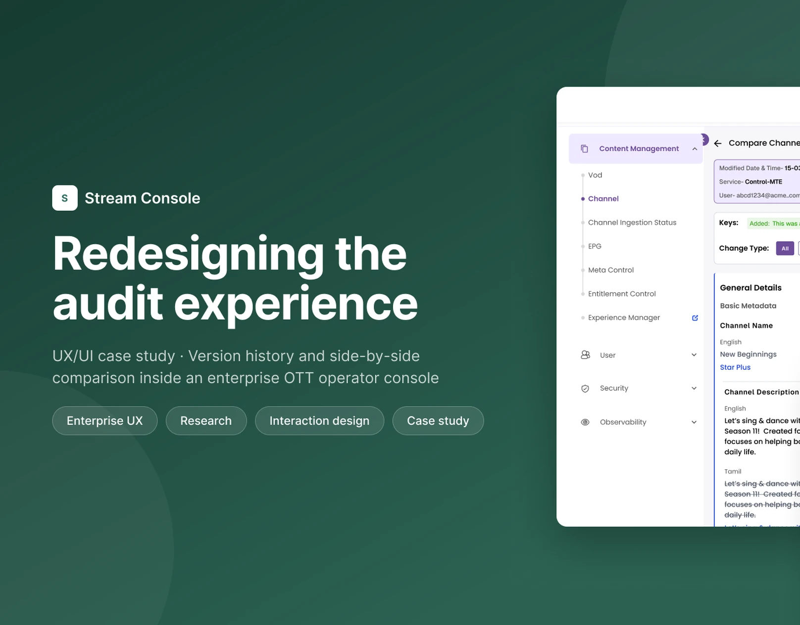
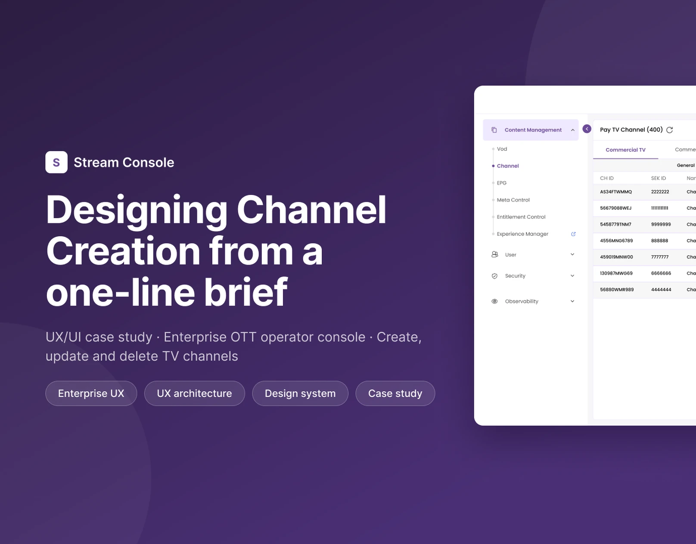

Senior Product / UI/UX Designer Enterprise SaaS & Complex Workflows
I make complicated
systems feel calm.
I'm Prashakha. I design clear, usable experiences for complex enterprise workflows, like an OTT operator console where one form holds about 150 fields and every change has to be traceable. Six years in design, and UI/UX since 2020.
Based in Noida, India · Open to senior roles in Noida or remote
Complex workflows, made clear.
Two features I designed and shipped for an enterprise OTT operator console, and two self-initiated concepts in healthcare and corporate travel.

Redesigning the audit experience
To see what changed on a channel, operators left it, typed IDs from memory and compared records by eye. I moved version history into the channel page and added a side by side comparison.
- Role
- Research to design QA
- Focus
- Version history and comparison

Channel Creation from a one line brief
The brief was one sentence. With Solution Architecture and Engineering I found every field a channel needs and shaped them into a five step form with preview, safe deletion and job tracking.
- Role
- UX architect and UI designer
- Focus
- A ~150 field creation flow

Jaanch: lab tests at home
Booking a home lab test is easy. Preparing, tracking each test and recovering from a failed sample are not. One booking across a patient app, a website, an ops console and an offline collector app.
- Role
- Solo, self initiated
- Focus
- Service recovery across four surfaces

Policy aware corporate flight booking
For a work trip, the cheapest flight can still be wrong. Each flight shows policy, trip readiness and document checks while people compare, and approval stays clearly separate from booking.
- Role
- Solo, design challenge
- Focus
- Policy and approval flow
I design for the point where a rule heavy system meets a real person with a deadline.
I'm a senior UI/UX designer at Irdeto in Noida. Since 2024 I've worked on an enterprise OTT operator console covering content, entitlements, devices and system configuration, along with the viewer apps on mobile, Smart TV and set-top box.
The part I enjoy most is the early, messy stage, when the business logic only exists in tickets and in people's heads. I pull it out, give it a structure, and turn it into flows that hold up in reviews and in build.
I also mentor designers on the team and take part in hiring interviews. Before Irdeto, I designed vehicle rental and booking platforms at Dogma Systems and internal dashboards at ACIL Technologies. I started in graphic design in 2020.
How I usually work.
The tools change from project to project. The order mostly stays the same.
- 01
Uncover
Stakeholder sessions, support shadowing and developer workshops to learn what the product really has to do.
- 02
Structure
Field lists, information architecture and task flows. Most of the complexity gets solved here.
- 03
Shape
Sketches, wireframes and final screens from the design system, with empty, loading and error states.
- 04
Ship
Annotated handoff, regular pairing with engineers and design QA before release.
Where the work happened.
Senior UI/UX Designer
- Design an enterprise OTT operator console with 20+ modules, plus viewer apps on mobile, tablet, Smart TV, STB and DTH.
- Turn complex business rules and role based permissions into information architecture and task flows.
- Built the shared component library used across the console.
- On the viewer apps, use research studies, NPS and CSAT, Mixpanel and Microsoft Clarity to check design decisions. The operator console has no product analytics, so there I rely on shadowing and workshops.
- Mentor designers and take part in hiring.
UI/UX Designer
- Designed MyRent, a vehicle rental platform for short and long term rentals with multi step booking.
- Adapted the booking experience for FeliRent, AutoOne, Giffi, Moventur and Gesmo.
- Ran user interviews and competitor reviews, and designed search, product, cart and checkout journeys, using analytics and A/B tests to check changes.
- Also worked on brand, campaign, video and 3D assets.
UI/UX Designer
- Designed internal dashboards and admin applications.
- Traced repeated client complaints to sitemap and navigation problems, then fixed them release by release after usability testing.
Graphic Designer
- Visual and marketing design, where I started before moving into UI/UX.
Education
MA, Public Administration and Political Science, University of Rajasthan (2015 – 2018) · BA, University of Rajasthan (2012 – 2015)
Design
- Figma
- FigJam
- Adobe XD
- Photoshop
- Illustrator
Process
- User research
- Information architecture
- Wireframing
- Usability testing
- Design systems
Platforms
- Web
- Mobile and tablet
- Smart TV
- STB / DTH
Delivery
- Dev handoff
- Design QA
- Agile delivery
- Jira and Confluence
AI tools
- Figma AI and MCP
- Claude
- ChatGPT
- GitHub Copilot
- Lovable